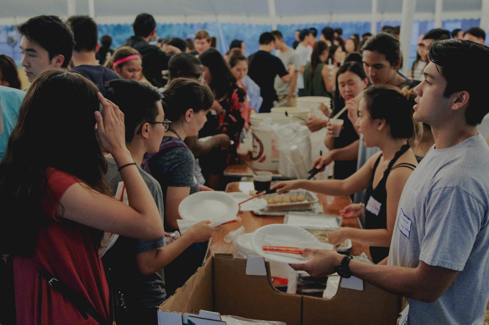

-

AASA Committee
Hello! We are so excited that you're interested in joining AASA Committee and we're looking forward to working together this year :D
Committee members will touch and shape everything that AASA does as an organization. Whether it be putting on an dialogue event in Asian Pacific American Heritage Month, running logistics of Asian New Year Festival, or organizing a mental health and AAPI-issues workshop, Committee members will have a voice and will have the opportunity to take on as much responsibility as they'd like to help organize.
SIGN UP HERE